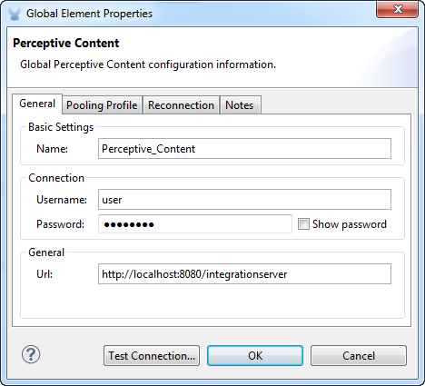
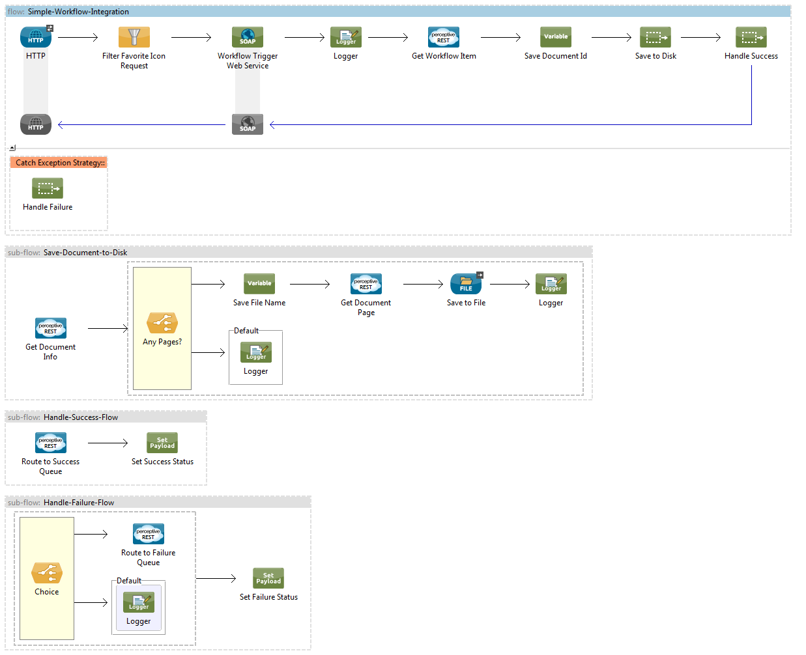
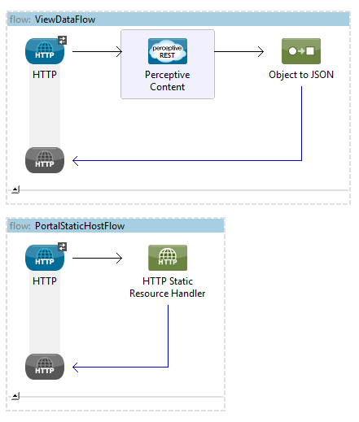

Perceptive Content MuleSoft Connector
Overview
The Perceptive Content MuleSoft Connector provides a collection of functionality to create integrations between Perceptive Content and MuleSoft.
Table of Contents
Features
Integration Server
A RESTful web service used to pull from and push to data Perceptive Content.
The Perceptive Content MuleSoft Connector provides a collection of the most commonly used operations offered by Integration Server. The @Processors supported roughly model the RESTful endpoints. Consult your Integration Server documentation for questions about included operations or to add support for new operations.
To use, simply drag the Perceptive Content connector onto an existing flow. The connector requires global configuration for the Integration Server url, user and password. The user and password must be valid Perceptive Content users with the permissions appropriate for the type of operations you plan to leverage. It is advisable to use a service account with manager permissions to avoid issues.

A complete list of operations can be found in the Java doc. At a high-level, the operations fall into five functionaly areas corresponding to the Integration Server operational endpoints.
- Document: Interacting with document details and pages.
- View: Executing views to retrieve lists of objects matching specified search criteria.
- Forms: Interacting with Perceptive Content eForms.
- WorflowQueue: Get details about existing workflow queues.
- WorkflowItem: Interacting with workflow items. Used to add documents or route documents within workflows.
Workflow Integration
Perceptive Content workflow integration is achieved using Envoy and special workflow queue called an Integration queue. When an object enters an Integration queue, the configured Envoy service (SOAP) service is triggered. See your Perceptive Content documentation for more information.
Envoy requires a web service operation with the following signature.
<xs:schema xmlns:xs="http://www.w3.org/2001/XMLSchema" xmlns:tns="http://www.perceptivesoftware.com/content/workflow" elementFormDefault="unqualified" targetNamespace="http://www.perceptivesoftware.com/content/workflow" version="1.0">
<xs:element name="invokeTrigger" type="tns:invokeTrigger"/>
<xs:element name="invokeTriggerResponse" type="tns:invokeTriggerResponse"/>
<xs:complexType name="invokeTrigger">
<xs:sequence>
<xs:element minOccurs="0" name="ITEM_ID" type="xs:string"/>
<xs:element minOccurs="0" name="QUEUE_ID" type="xs:string"/>
<xs:element minOccurs="0" name="QUEUE_NAME" type="xs:string"/>
<xs:element minOccurs="0" name="SUCCESS_QUEUE_ID" type="xs:string"/>
<xs:element minOccurs="0" name="SUCCESS_QUEUE_NAME" type="xs:string"/>
<xs:element minOccurs="0" name="FAILURE_QUEUE_ID" type="xs:string"/>
<xs:element minOccurs="0" name="FAILURE_QUEUE_NAME" type="xs:string"/>
</xs:sequence>
</xs:complexType>
<xs:complexType name="invokeTriggerResponse">
<xs:sequence>
<xs:element name="return" type="xs:boolean"/>
</xs:sequence>
</xs:complexType>
</xs:schema>
Samples
Simple Workflow Integration
The simple workflow integration sample illustrates a basic flow to integration with Perceptive Content workflow.

The Workflow Trigger Web Service step publishes and services the SOAP web service required by Envoy. A CXF interceptor will inject output properties into the mule message with the parameters sent by workflow.
-
asq.item.idThe workflow item ID.
-
asq.queue.idThe ID of the Integration queue. -
asq.queue.nameThe name of the Integration queue. -
asq.queue.success.idThe ID of the success queue. -
asq.queue.success.nameThe name of the queue. -
asq.queue.failure.idThe ID of the failure queue. -
asq.queue.failure.nameThe name of the failure queue.
The Get Workflow Item step will convert the Workflow Item ID (asq.item.id) into an object (document) ID.
The Set Success Status and Set Failure Status returns true or false fulfilling the web service contract required by Envoy.
Simple Portal
The simple portal sample illustrates a possible way to use the view execution functionality.

The PortalStaticHostFlow hosts a static web page that uses JavaScript to execute the ViewDataFlow. The ViewDataFlow returns a JSON structure that is interpretted by the page and displayed in a table format.
Usage Guidelines
The content provided in this repository is offered free of charge. The content can be used as is, modified, or distributed without notifying Perceptive. All efforts have been made to ensure quality and accuracy of the content, but is not covered by any warranty or support.
Please submit GitHub pull requests for feature enhancements or bug fixes. They will be considered and acted upon as time and priority allow.